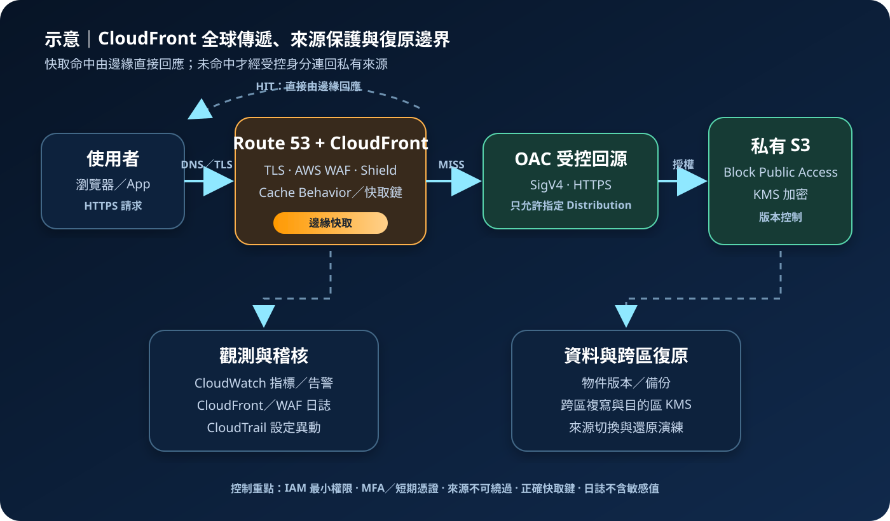

Amazon CloudFront：全球內容傳遞與邊緣安全
Amazon CloudFront 是內容傳遞網路（CDN）服務，透過全球邊緣站點接收請求、快取內容並連回來源。它能降低延遲與來源負載，也能整合 TLS、AWS WAF 與 DDoS 防護；但不會自動修正錯誤的快取鍵、過度公開的來源或缺少復原能力的後端。
作者：Dr. William｜查閱與發布：2026-09-01
服務定位
CloudFront 位於使用者與 Origin（來源）之間。使用者連到最近且合適的邊緣站點；若物件已在快取且仍有效，邊緣直接回應，否則經 AWS 網路向 S3、Application Load Balancer、API Gateway、EC2 或自訂 HTTP 來源取回內容。Distribution（分配）定義網域、來源、快取行為、憑證、日誌與安全設定。
CloudFront 適合靜態檔案、影音、下載、網站與可明確定義快取規則的動態 API。它是傳遞與邊緣控制層，不是資料庫、備份服務或應用授權系統；來源資料一致性、交易正確性及區域復原仍由後端架構負責。
核心概念
傳遞與快取
- Edge Location：接收 Viewer Request 並提供快取內容。
- Origin：內容的權威來源，可為 AWS 服務或自訂 HTTP 端點。
- Cache Behavior：依路徑模式指定來源、允許方法、快取政策、Origin Request Policy 與邊緣函式。
- Cache Key：由路徑及選定的 Query String、Header、Cookie 組成；設計錯誤可能洩漏個人化內容或降低命中率。
- TTL 與 Invalidation：TTL 控制新鮮度，版本化檔名通常比頻繁失效更可預測。
安全與流量控制
- Viewer／Origin Protocol Policy：分別控制使用者端與來源端 HTTP/HTTPS。
- Origin Access Control（OAC）：讓 CloudFront 以 SigV4 存取私有 S3 Bucket，避免使用 S3 網站端點作為私有來源。
- Signed URL／Cookie：限制付費或私有內容的存取時間與範圍。
- CloudFront Functions／Lambda@Edge：在邊緣執行輕量或進階請求處理，能力、區域與限制不同。
- AWS WAF／Shield：在邊緣過濾 Web 請求並提供分層 DDoS 防護。
適合與不適合的使用情境
適合
- 向跨地區使用者提供圖片、JavaScript、CSS、軟體下載或影音，並降低延遲與來源頻寬。
- 把網站或 API 的公開入口集中到 HTTPS、WAF、速率限制與一致的安全標頭。
- 以 OAC 保護 S3 私有來源，或以 Signed URL／Cookie 控制私有內容。
- 透過多來源與 Origin Group，在定義的 HTTP 狀態下執行來源容錯移轉。
不適合或不能單獨完成
- 每個請求都必須即時取得強一致、不可快取的交易結果，且邊緣層沒有延遲或安全價值。
- 以 CDN 取代應用身分驗證、物件層授權或資料遮罩；Signed URL 也不能修正來源的越權存取。
- 需要任意 TCP/UDP 協定代理；CloudFront 主要處理 HTTP/HTTPS，其他協定需評估 Global Accelerator 或負載平衡服務。
- 把 Origin Failover 視為完整跨區災難復原；資料、機密、KMS 金鑰、DNS、容量與第三方依賴仍須部署及演練。
示意故事案例：私有網站資產的全球安全傳遞
以下為架構示意，不代表特定組織或正式部署。一個線上學習平台把公開前端資產存入禁止公開存取的 S3 Bucket。Route 53 Alias 指向 CloudFront，ACM 憑證提供 HTTPS；CloudFront 透過 OAC 讀取 S3，AWS WAF 阻擋已知惡意模式並限制異常請求。版本化檔名讓新版本可長時間快取，部署完成後只對必要入口頁執行 Invalidation。CloudFront 標準日誌與即時指標送入受控觀測流程，CloudTrail 監控分配、政策與 WAF 變更。部署人員使用 MFA 與短期憑證，來源資料以 KMS 加密並透過版本控制、AWS Backup 或跨區複寫支援復原。

建置與運作流程
- 盤點內容與請求：區分公開、私有、個人化及不可快取內容，列出方法、Header、Cookie、Query String、檔案大小、地區、合規與 RTO/RPO。
- 建立私有來源：S3 啟用 Block Public Access、版本控制與必要的 KMS 加密；自訂來源置於適當 VPC 網路層，只允許必要流量並防止繞過 CloudFront。
- 建立 Distribution：設定來源、Alternate Domain Name、ACM 憑證、最低 TLS 政策與 HTTP 重新導向，依資料分類選擇價格等級與地理限制。
- 設計 Behavior：每種路徑明確設定方法、快取政策與 Origin Request Policy。個人化回應不得共用錯誤快取鍵；轉送項目愈多通常愈難命中。
- 保護來源：S3 優先採 OAC 及精確 Bucket Policy；自訂來源使用 HTTPS、來源驗證與網路限制。機密只存於 Secrets Manager 或 Parameter Store，不能寫入程式、URL、Cookie 名稱或快取內容。
- 加入邊緣防護：依風險配置 AWS WAF Managed Rules、速率型規則、Bot Control 或地理條件，確認誤攔截處理與 Shield 防護層級。
- 建立發布策略：資產使用內容雜湊或版本化檔名，HTML 設較短 TTL；先上傳新物件再切換參照，必要時精準 Invalidation，避免清除全部快取。
- 建立觀測與稽核：啟用 CloudFront 指標、告警及適用的標準或即時日誌；CloudTrail 監控設定異動，集中日誌採 KMS 加密、最小權限與保存期限。
- 測試與復原：驗證桌面與行動裝置、Cache Hit/Miss、錯誤回應、Signed URL、來源不可直連、WAF、IPv6 及多地區效能；演練來源故障、設定回復與跨區資料復原。
成本與可用性考量
CloudFront 成本依方案與使用模式可能包含向網際網路傳出的資料、HTTP/HTTPS 請求、Origin Shield、即時日誌、CloudFront Functions、Lambda@Edge、Invalidation 及額外安全功能。AWS 來源傳至 CloudFront 的資料傳輸常有特定價格規則，但仍須依來源、區域與最新定價確認。低命中率、過多快取鍵、頻繁完整失效及大量錯誤流量會增加來源與邊緣成本。
CloudFront 使用全球邊緣網路，但整體可用性仍受來源、憑證、DNS、WAF 規則及設定部署影響。較長 TTL 可提高命中率並在來源短暫故障時保留既有快取，代價是內容更新較慢；錯誤快取 TTL 也需避免放大故障。Origin Shield 可減少多個邊緣同時回源，但增加費用與一個選定區域的路徑考量。
跨區復原不能只建立第二個 Origin。需確認資料已複寫、S3 Bucket Policy 與 OAC 權限有效、KMS 金鑰可用、Secrets Manager 機密已同步、WAF 與憑證設定一致，並測試 Origin Group 的切換條件是否符合應用語意與 RTO/RPO。
特有資安風險與控制
- 來源可被繞過：若 S3、ALB 或自訂來源仍可直接公開存取，攻擊者能避開 WAF、速率限制與 CloudFront 日誌。S3 使用 OAC 與 Block Public Access；自訂來源限制入口並驗證 CloudFront 才持有的受管值，定期測試來源不可直連。
- 快取鍵造成資料外洩：授權狀態、Cookie 或個人化 Header 未納入正確決策，可能把一位使用者的回應提供給他人。敏感回應設為不快取，明確定義 Cache-Control 與快取鍵，建立多身分隔離測試。
- 快取投毒與非預期轉送：未驗證的 Host、Header、Query String 或重寫邏輯可能污染共享快取。只允許必要轉送欄位，正規化輸入、限制方法，WAF 阻擋異常格式，監控命中率與錯誤尖峰。
- Signed URL／Cookie 誤用：期限過長、私鑰管理不當或路徑範圍過寬會擴大未授權分享。使用受控 Key Group、最短有效期與精確資源範圍；私鑰放入受限機密系統並輪替，不得寫入網站或日誌。
- TLS 與自訂網域錯置：過舊安全政策、憑證未涵蓋網域或 Viewer 允許 HTTP 會造成降級及中斷。強制 HTTPS、採合適最低 TLS 版本，監控 ACM 到期與 CAA/DNS 變更。
- 邊緣程式碼風險：CloudFront Functions 或 Lambda@Edge 的重寫、授權與標頭程式若有缺陷，會在全球放大。最小化程式與 IAM 權限，版本化、測試、分階段發布並保留快速回復版本。
- WAF 規則誤攔截或繞過：規則順序、Scope-down Statement 或未涵蓋的路徑可能造成可用性或保護缺口。先以 Count 觀測、測試例外與優先序，對 ACL 變更設 CloudTrail 告警及雙人審核。
- 日誌中的敏感資訊：URL、Query String、Cookie 與 Header 可能含個資或機密。應用不得把 credential、Access Key、Secret Key、Token、密碼或 cookie 值放入 URL；日誌採欄位最小化、KMS 加密、最小讀取權限及保存期限。
- DDoS 與成本消耗：大量動態、未命中或昂貴路徑可同時壓迫來源與帳單。使用 Shield Standard、適用時評估 Shield Advanced，搭配 WAF 速率規則、快取、來源容量與 AWS Budgets／異常偵測告警。
共同責任邊界
AWS 負責 CloudFront 全球邊緣基礎設施、受管服務控制平面、實體設施及底層網路與主機的安全維護。客戶負責 Distribution、Origin、Behavior、Cache Key、TLS、Signed URL、邊緣程式、IAM 最小權限、MFA 與短期憑證、VPC 與來源網路隔離、公開存取、OAC、KMS 加密、Secrets Manager/Parameter Store、AWS WAF、CloudTrail/CloudWatch、日誌資料治理、備份及跨區復原。CloudFront 交付成功不代表來源授權、內容正確性或資料復原已完成。
上線前可執行檢查清單
- □ 自訂網域、Route 53 Alias、ACM 憑證、HTTP 轉 HTTPS 與最低 TLS 政策已從外部網路驗證。
- □ 每個 Cache Behavior 的來源、方法、Cache Policy、Origin Request Policy 與回應標頭符合資料分類。
- □ 個人化及授權回應已用兩個隔離身分交叉測試，未出現在共享快取或錯誤快取鍵。
- □ S3 Block Public Access、OAC 與精確 Bucket Policy 已生效；自訂來源無法繞過 CloudFront 直接存取。
- □ 管理者使用 MFA、短期憑證與 IAM 最小權限，Distribution、WAF、OAC 及邊緣程式變更需要審核。
- □ KMS 金鑰政策、S3 加密與跨區目的地權限已驗證；應用機密只在 Secrets Manager 或 Parameter Store。
- □ AWS WAF 規則已經 Count／測試階段驗證，速率限制、誤攔截處理及 Shield 層級有明確責任人。
- □ CloudFront、WAF、來源與 CloudWatch 指標告警已啟用，CloudTrail 變更稽核及日誌保存、加密、權限符合政策。
- □ 發布採版本化檔名，TTL、錯誤快取與 Invalidation 範圍已測試，不依賴大範圍清除作為日常流程。
- □ Signed URL／Cookie 的 Key Group、有效期、路徑範圍、私鑰保存與輪替流程已測試。
- □ 已演練來源故障、錯誤設定回復與跨區復原，確認備份、複寫、KMS、機密、容量及 RTO/RPO。
- □ URL、日誌、程式碼與設定中不含 credential、Access Key、Secret Key、Token、密碼或 cookie 值。
AWS 官方一手來源
- Amazon CloudFront Developer Guide｜What is Amazon CloudFront?（查閱：2026-09-01）
- Managing how long content stays in the cache（查閱：2026-09-01）
- Control the cache key with a policy（查閱：2026-09-01）
- Restrict access to an Amazon S3 origin（查閱：2026-09-01）
- Serve private content with signed URLs and signed cookies（查閱：2026-09-01）
- Optimize high availability with CloudFront origin failover（查閱：2026-09-01）
- Security in Amazon CloudFront（查閱：2026-09-01）
- AWS WAF protections for CloudFront（查閱：2026-09-01）
- Amazon CloudFront pricing（查閱：2026-09-01）
- AWS Shared Responsibility Model（查閱：2026-09-01）
內容說明
本文依查閱日可用的 AWS 官方文件整理，作為基礎學習與架構討論材料；實際部署仍須依區域支援、最新價格與配額、工作負載測試、組織政策、法規及風險評估調整。